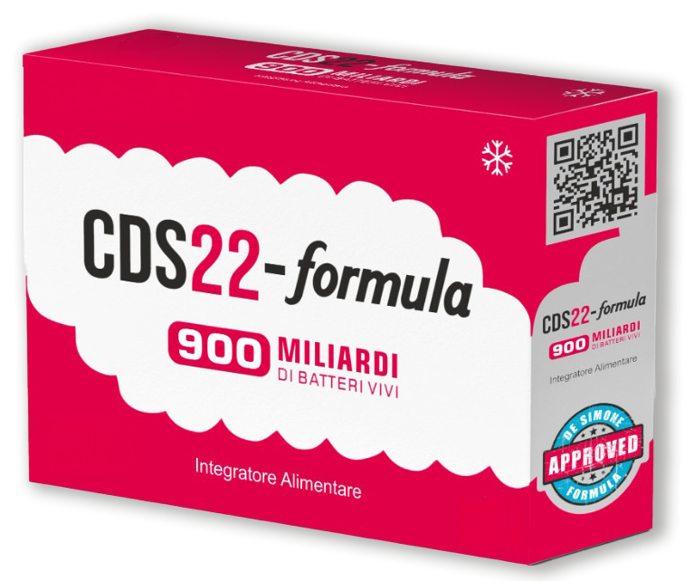

The De Simone Formula unique and
certified by the Inventor
The De Simone Formulation unique and certified by the Inventor
20+ Years of Research
8 Studies
900 Million Sold
200+ Publications
Science Speaks For Itself
The De Simone Formulation contained in CDS22-formula is the only
probiotic formulation recommended and recognized by name in
the American College of Gastroenterology AGA guidelines for the
management of pouchitis and other pouch related disorders (Olleik
et al., Gastroenterology, Vol. 164, No. 6, 2023).
The European Crohn s and Colitis Organization (ECCO) has included
the De Simone Formulation in its guidelines for the management of
Inflammatory Bowel Diseases (IBD) (ECCO, ECCO News, 2023).
CDS22-formula is highly effective in the dietary management of
various gastrointestinal conditions. The extensive scientific evidence,
comprising over 200 peer reviewed articles and more than 80
controlled clinical studies, ensures that the benefits observed in
clinical trials are replicable in everyday use
Why Does It Work?
Not all probiotics are the same. The overall biological action of a probiotic is not
simply the sum of its individual components actions but the result of a complex
network of relationships between the microorganisms it contains and the human
host. Unlike many other products on the market, the clinical results obtained
from CDS22-formula speak louder than any technical description.
CDS22-formula combines 8 bacterial strains selected for their biochemical and
enzymatic profiles and specifically calibrated in precise proportions to
synergistically act on the physiology of the human gastrointestinal tract.
It is crucial to emphasize that the production of the Formulazione De
Simone falls
within the field of biology, not chemistry, as the bacteria forming the product
s
base are living organisms. Their cultivation requires advanced scientific
knowledge and specific know-how, still protected by industrial secrecy
The unique and advanced know-how developed by Prof. Claudio De Simone,
which includes specific industrial secrets, contributes to the uniqueness and
efficacy of CDS22-formula, making it extremely difficult for others to replicate
or
produce an identical or functionally equivalent product.
Supported by solid scientific evidence, CDS22-formula is highly effective in the
dietary management of dysbiosis and other gastrointestinal conditions, offering
proven and replicable clinical results.
Benefits:
Control of Intestinal Dysbiosis
Intestinal dysbiosis is a condition where the natural balance of microorganisms in the intestine is altered, causing various gastrointestinal disorders. Controlling dysbiosis is crucial for maintaining digestive health, improving patient comfort, and contributing to overall well-being, even in cases of chronic intestinal disorders like irritable bowel syndrome, ulcerative colitis, and pouchitis.
Immediate and Prolonged Restoration of Intestinal Flora
CDS22-formula is ideal for both acute and chronic episodes of intestinal dysbiosis. It reduces the severity and duration of symptoms, improving patient comfort and accelerating recovery. It is particularly indicated for supporting intestinal health and can be beneficial in cases of temporary or chronic intestinal disorders characterized by accelerated transit that prevents normal daily activities or adequate night rest.
Variety of Dosages
Available in different formats and dosages to support intestinal health and adapt to individual dietary needs, offering flexibility to healthcare professionals in personalizing supplementation.
Original Formulation
CDS22-formula is the original Formulazione Di Simone, a unique combination of proprietary bacterial strains designed to maximize intestinal well-being. The strains are cultivated and maintained in proprietary Master Cell Banks, ensuring purity, quality, and consistency in every product.
Guaranteed Safety
Every dose has been tested to ensure maximum efficacy and safety. Thanks to a short supply chain approved by the inventor, the product maintains the highest quality standards from raw material to packaging.
Affordability
CDS22-formula offers superior value compared to probiotics containing equivalent quantities of bacteria. Efficient production and direct cost control allow us to offer a more affordable product without compromising quality.
De Simone Formulation
The De Simone Formulation is comprised of 8 strains of lactic acid bacteria and bifidobacteria. It was pioneered by Professor Claudio De Simone, MD, PhD, who conducted numerous approaches to intestinal health by introducing the use of high concentration probiotic mixtures to favorably manage diverse and significant gastrointestinal conditions.
His interest in this important scientific area dates back to the 1980s when the importance of the intestinal flora’s role was just beginning to be understood. Professor De Simone is a former member of the American College of Gastroenterology and, after graduating in Medicine and Surgery, specialized in gastroenterology, allergy, and clinical immunology. He taught at several Universities in the US and Europe.
He has published over 400 scientific studies, reviews, and publications.
Over 20 years ago, the now-known De Simone Formulation, or the SLAB51, was extensively studied for better regulation and quality control of production, stability, and efficacy. All of these studies were conducted by Professor De Simone.
As evidenced by Professor De Simone’s numerous references and publications, many marketed products have not been clinically assessed in man nor investigated for species, strain or dose. Some have caused leading international differences in the safety and efficacy of the final product. De Simone’s work has been published in peer-reviewed journals.
Current regulations often do not include specific requirements to establish that therapies for managing constipation demonstrate the efficacy and safety of the commercially sold probiotic products.
There is ONE De Simone Formulation
To this point, the De Simone Formulation and under the brand name VSL#3®, was manufactured and sold for over a decade in the US, Canada and Europe by Sigma-Tau Pharmaceuticals, Inc.
In 2016, VSL#3’s then-owner was found guilty of false advertising by a New York Federal Judge. (Ruling: Rimini, Merck KGaA, Schering-Plough, VSL Pharmaceuticals, Records). The European Courts and Canadian Courts (CCO) have upheld this guilty ruling that there is a difference between the De Simone Formulation and the new VSL#3® formula. This ruling is based on the scientific evidence and on the fact that the new VSL#3® does not contain the De Simone Formulation. (See the “Court Cases” section on this website for copies of the Court Orders and PDF’s).
The De Simone Formulation is sold under the brand name “Visbiome®” in the USA and Canada (Europe) and under the brand name “Sivomixx®” in Europe (EU).
Now is available in the EU under the brand CDS22-formula.
Note: to be available in the EU under the brand CDS22-formula.
Product packaging

CDS22-formula
900 billion sachets
Superior power
Monthly 45 Billion live bacteria per sachet
CDS22-formula
450 billion sachets
Strong and convenient
Daily 15 Billion live bacteria per sachet
CDS22-formula
112 billion capsules
Effective and reliable
Daily 3.7 Billion live bacteria per capsule
Follow the dosage instructions indicated on the packaging.
Do not exceed the recommended daily dose unless otherwise advised by a doctor.
Store the product in a refrigerator at a temperature of 2-8°C and away from light. The product can withstand short excursions (max. 25°C) for several weeks without affecting its quality.
Keep out of reach of young children.
This product is not intended for the diagnosis, treatment, cure, or prevention of disease.
FAQ
What does CDS22-formula contain?
*(Answer to What does CDS22-formula contain?)*
Where can I find CDS22-formula?
*(Answer to Where can I find CDS22-formula?)*
Why should I take CDS22-formula?
*(Answer to Why should I take CDS22-formula?)*
How do I take CDS22-formula?
*(Answer to How do I take CDS22-formula?)*
Does CDS22-formula contain allergens?
*(Answer to Does CDS22-formula contain allergens?)*
Why must CDS22-formula be stored in the refrigerator?
*(Answer to Why must CDS22-formula be stored in the refrigerator?)*
Can CDS22-formula have side effects?
*(Answer to Can CDS22-formula have side effects?)*
Can CDS22-formula be taken during antibiotic therapy?
*(Answer to Can CDS22-formula be taken during antibiotic therapy?)*
Can CDS22-formula be taken during pregnancy?
*(Answer to Can CDS22-formula be taken during pregnancy?)*